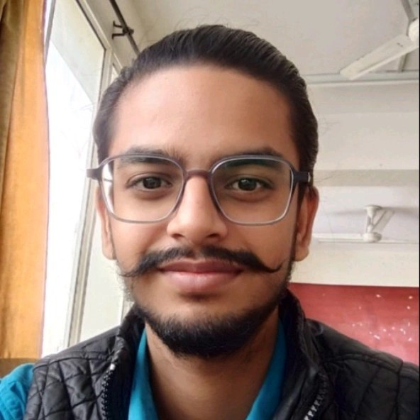
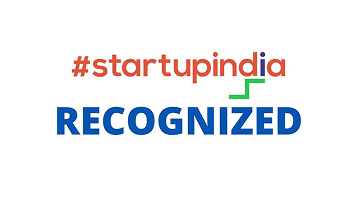

A non-profit organization committed to bridging the gap between academia and industry through research-driven learning in emerging technologies.
To become a global hub for research and innovation. By 2028, we aim to train over 1,000 students, support 100+ publications, and partner with 50+ institutions to build a vibrant ecosystem that empowers the next generation of scientists.

"My first exposure to the world of research came through exceptional mentors who encouraged me to explore beyond textbooks. A visit to DRDO-RCI was the turning point. Gudsky was born from these experiences—desire to create a platform where every student has the mentorship and opportunity to turn their curiosity into tangible innovation."
